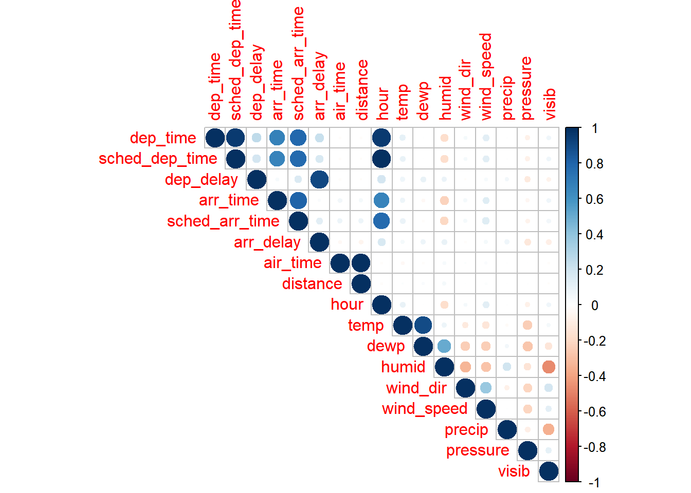

> library(readxl)
> joined_data <- read_excel("D:\\Rstudio\\Rmyfile\\Flights\\EDA\\joined_data.xlsx")线性回归模型
✏️本节导读
本节首先对联立后的所有变量做了线性回归模型，发现可以解释89%的因变量的变异。
但是有些变量并不显著，通过分析之后决定，删除不显著的变量。删除之后的方程所有变量均显著，且仍可以解释89%的变异。
一般线性回归
> D <- lm(arr_delay~month+day+hour+dep_time+sched_dep_time+sched_arr_time+dep_delay+carrier+origin+dest+air_time+arr_time+distance+temp+dewp+humid+wind_dir+wind_speed+pressure+visib,data = joined_data)
> summary(D)
Call:
lm(formula = arr_delay ~ month + day + hour + dep_time + sched_dep_time +
sched_arr_time + dep_delay + carrier + origin + dest + air_time +
arr_time + distance + temp + dewp + humid + wind_dir + wind_speed +
pressure + visib, data = joined_data)
Residuals:
Min 1Q Median 3Q Max
-55.128 -8.597 -1.601 6.368 163.697
Coefficients:
Estimate Std. Error t value Pr(>|t|)
(Intercept) 4.512e+01 1.244e+01 3.628 0.000286 ***
month 4.290e-02 8.121e-03 5.283 1.27e-07 ***
day 1.940e-02 2.974e-03 6.522 6.97e-11 ***
hour 1.289e+00 1.409e-01 9.146 < 2e-16 ***
dep_time 2.741e-03 2.062e-04 13.290 < 2e-16 ***
sched_dep_time -1.515e-02 1.432e-03 -10.583 < 2e-16 ***
sched_arr_time -2.596e-03 1.129e-04 -23.003 < 2e-16 ***
dep_delay 1.012e+00 7.554e-04 1340.121 < 2e-16 ***
carrierAA 2.334e+00 1.777e-01 13.132 < 2e-16 ***
carrierAS -1.940e+00 6.471e-01 -2.998 0.002718 **
carrierB6 6.975e+00 1.535e-01 45.445 < 2e-16 ***
carrierDL 2.120e+00 1.583e-01 13.392 < 2e-16 ***
carrierEV 3.318e+00 1.594e-01 20.816 < 2e-16 ***
carrierF9 7.001e+00 6.244e-01 11.212 < 2e-16 ***
carrierFL 6.496e+00 3.625e-01 17.921 < 2e-16 ***
carrierHA -6.268e+00 1.153e+00 -5.434 5.51e-08 ***
carrierMQ 8.738e+00 1.653e-01 52.860 < 2e-16 ***
carrierOO 4.995e+00 2.678e+00 1.865 0.062155 .
carrierUA 1.574e+00 1.753e-01 8.979 < 2e-16 ***
carrierUS 6.974e+00 2.025e-01 34.437 < 2e-16 ***
carrierVX -2.748e+00 2.731e-01 -10.061 < 2e-16 ***
carrierWN -2.055e+00 2.470e-01 -8.321 < 2e-16 ***
carrierYV 3.868e+00 6.570e-01 5.887 3.94e-09 ***
originJFK -1.458e+00 1.229e-01 -11.862 < 2e-16 ***
originLGA 7.831e-01 1.208e-01 6.484 8.92e-11 ***
destACK -8.419e+01 1.050e+01 -8.021 1.06e-15 ***
destALB -8.440e+01 1.076e+01 -7.847 4.29e-15 ***
destANC 1.087e+02 1.114e+01 9.759 < 2e-16 ***
destATL -4.775e+01 6.891e+00 -6.929 4.24e-12 ***
destAUS -1.322e+01 2.194e+00 -6.027 1.67e-09 ***
destAVL -5.612e+01 7.981e+00 -7.031 2.05e-12 ***
destBDL -8.538e+01 1.093e+01 -7.813 5.60e-15 ***
destBGR -6.943e+01 9.349e+00 -7.427 1.12e-13 ***
destBHM -4.865e+01 6.283e+00 -7.744 9.69e-15 ***
destBNA -5.250e+01 6.873e+00 -7.638 2.21e-14 ***
destBOS -8.224e+01 1.048e+01 -7.847 4.27e-15 ***
destBQN 1.496e+01 1.883e+00 7.948 1.90e-15 ***
destBTV -7.562e+01 1.001e+01 -7.553 4.26e-14 ***
destBUF -7.758e+01 9.820e+00 -7.900 2.79e-15 ***
destBUR 3.542e+01 4.263e+00 8.310 < 2e-16 ***
destBWI -7.952e+01 1.057e+01 -7.526 5.24e-14 ***
destBZN 1.157e+01 2.733e+00 4.232 2.32e-05 ***
destCAE -4.511e+01 7.937e+00 -5.684 1.32e-08 ***
destCAK -6.805e+01 9.230e+00 -7.372 1.68e-13 ***
destCHO -7.684e+01 1.001e+01 -7.677 1.64e-14 ***
destCHS -5.590e+01 7.660e+00 -7.298 2.93e-13 ***
destCLE -6.996e+01 9.064e+00 -7.718 1.18e-14 ***
destCLT -6.383e+01 8.256e+00 -7.731 1.07e-14 ***
destCMH -6.746e+01 8.680e+00 -7.772 7.76e-15 ***
destCRW -7.089e+01 8.997e+00 -7.880 3.29e-15 ***
destCVG -6.480e+01 8.013e+00 -8.086 6.17e-16 ***
destDAY -6.333e+01 8.256e+00 -7.672 1.70e-14 ***
destDCA -8.192e+01 1.036e+01 -7.909 2.61e-15 ***
destDEN -8.071e+00 1.631e+00 -4.947 7.53e-07 ***
destDFW -2.430e+01 2.969e+00 -8.184 2.76e-16 ***
destDSM -4.011e+01 5.222e+00 -7.681 1.58e-14 ***
destDTW -7.131e+01 8.531e+00 -8.358 < 2e-16 ***
destEGE -1.211e+01 1.491e+00 -8.120 4.67e-16 ***
destEYW -1.433e+01 5.608e+00 -2.555 0.010626 *
destFLL -3.383e+01 4.910e+00 -6.891 5.57e-12 ***
destGRR -5.764e+01 7.809e+00 -7.381 1.58e-13 ***
destGSO -6.605e+01 8.809e+00 -7.497 6.52e-14 ***
destGSP -5.799e+01 7.876e+00 -7.363 1.80e-13 ***
destHDN -6.766e+00 4.148e+00 -1.631 0.102835
destHNL 2.097e+02 2.020e+01 10.381 < 2e-16 ***
destHOU -2.088e+01 2.743e+00 -7.613 2.68e-14 ***
destIAD -8.042e+01 1.028e+01 -7.826 5.04e-15 ***
destIAH -1.732e+01 2.810e+00 -6.165 7.07e-10 ***
destILM -6.969e+01 8.655e+00 -8.052 8.19e-16 ***
destIND -5.930e+01 7.527e+00 -7.878 3.34e-15 ***
destJAC 1.231e+01 3.261e+00 3.774 0.000161 ***
destJAX -4.626e+01 6.448e+00 -7.175 7.22e-13 ***
destLAS 2.750e+01 2.846e+00 9.663 < 2e-16 ***
destLAX 4.363e+01 4.243e+00 10.283 < 2e-16 ***
destLEX -5.429e+01 1.596e+01 -3.402 0.000669 ***
destLGB 3.386e+01 4.234e+00 7.997 1.28e-15 ***
destMCI -3.715e+01 4.713e+00 -7.883 3.20e-15 ***
destMCO -4.042e+01 5.706e+00 -7.084 1.41e-12 ***
destMDW -5.299e+01 7.116e+00 -7.446 9.64e-14 ***
destMEM -4.449e+01 5.629e+00 -7.904 2.72e-15 ***
destMHT -7.844e+01 1.034e+01 -7.585 3.34e-14 ***
destMIA -3.269e+01 4.783e+00 -6.835 8.19e-12 ***
destMKE -5.327e+01 7.031e+00 -7.576 3.57e-14 ***
destMSN -5.078e+01 6.588e+00 -7.708 1.28e-14 ***
destMSP -4.183e+01 5.242e+00 -7.980 1.47e-15 ***
destMSY -3.113e+01 4.239e+00 -7.344 2.08e-13 ***
destMTJ -9.028e+00 3.959e+00 -2.280 0.022606 *
destMVY -8.779e+01 1.067e+01 -8.224 < 2e-16 ***
destMYR -6.625e+01 8.371e+00 -7.914 2.49e-15 ***
destOAK 4.066e+01 4.961e+00 8.197 2.48e-16 ***
destOKC -1.990e+01 3.364e+00 -5.915 3.33e-09 ***
destOMA -3.458e+01 4.475e+00 -7.726 1.11e-14 ***
destORD -6.084e+01 7.064e+00 -8.613 < 2e-16 ***
destORF -7.660e+01 9.865e+00 -7.764 8.24e-15 ***
destPBI -3.376e+01 5.168e+00 -6.533 6.47e-11 ***
destPDX 3.408e+01 4.125e+00 8.263 < 2e-16 ***
destPHL -8.744e+01 1.113e+01 -7.860 3.87e-15 ***
destPHX 1.953e+01 2.290e+00 8.527 < 2e-16 ***
destPIT -7.657e+01 9.587e+00 -7.987 1.39e-15 ***
destPSE 1.635e+01 1.815e+00 9.007 < 2e-16 ***
destPSP 3.244e+01 5.041e+00 6.436 1.23e-10 ***
destPVD -7.935e+01 1.065e+01 -7.450 9.39e-14 ***
destPWM -7.455e+01 9.946e+00 -7.496 6.61e-14 ***
destRDU -6.931e+01 8.997e+00 -7.703 1.33e-14 ***
destRIC -7.645e+01 9.882e+00 -7.737 1.02e-14 ***
destROC -7.975e+01 1.006e+01 -7.928 2.24e-15 ***
destRSW -3.898e+01 4.890e+00 -7.973 1.56e-15 ***
destSAN 3.980e+01 4.064e+00 9.794 < 2e-16 ***
destSAT -1.417e+01 1.898e+00 -7.469 8.08e-14 ***
destSAV -5.242e+01 7.154e+00 -7.327 2.37e-13 ***
destSBN -6.590e+01 9.028e+00 -7.299 2.91e-13 ***
destSDF -6.121e+01 7.564e+00 -8.093 5.86e-16 ***
destSEA 3.111e+01 3.919e+00 7.939 2.05e-15 ***
destSFO 4.534e+01 4.934e+00 9.190 < 2e-16 ***
destSJC 4.110e+01 4.912e+00 8.366 < 2e-16 ***
destSJU 1.305e+01 1.720e+00 7.588 3.25e-14 ***
destSLC 9.879e+00 1.428e+00 6.916 4.65e-12 ***
destSMF 4.284e+01 4.627e+00 9.259 < 2e-16 ***
destSNA 3.039e+01 4.110e+00 7.393 1.44e-13 ***
destSRQ -3.842e+01 5.112e+00 -7.515 5.69e-14 ***
destSTL -4.734e+01 6.093e+00 -7.771 7.83e-15 ***
destSTT 1.459e+01 1.689e+00 8.639 < 2e-16 ***
destSYR -8.285e+01 1.041e+01 -7.957 1.77e-15 ***
destTPA -3.755e+01 5.327e+00 -7.050 1.80e-12 ***
destTUL -2.756e+01 4.031e+00 -6.837 8.08e-12 ***
destTVC -6.199e+01 7.704e+00 -8.046 8.55e-16 ***
destTYS -5.478e+01 7.648e+00 -7.163 7.92e-13 ***
destXNA -3.590e+01 4.482e+00 -8.009 1.16e-15 ***
air_time 9.085e-01 2.433e-03 373.345 < 2e-16 ***
arr_time 1.230e-03 8.661e-05 14.201 < 2e-16 ***
distance -1.704e-01 6.415e-03 -26.570 < 2e-16 ***
temp 1.724e-01 1.609e-02 10.713 < 2e-16 ***
dewp 2.275e-02 1.734e-02 1.312 0.189583
humid 3.250e-02 8.892e-03 3.655 0.000258 ***
wind_dir -6.123e-03 2.904e-04 -21.087 < 2e-16 ***
wind_speed 2.087e-01 5.539e-03 37.677 < 2e-16 ***
pressure 1.509e-02 4.089e-03 3.691 0.000223 ***
visib -4.565e-01 2.271e-02 -20.103 < 2e-16 ***
---
Signif. codes: 0 '***' 0.001 '**' 0.01 '*' 0.05 '.' 0.1 ' ' 1
Residual standard error: 13.87 on 284412 degrees of freedom
Multiple R-squared: 0.891, Adjusted R-squared: 0.8909
F-statistic: 1.697e+04 on 137 and 284412 DF, p-value: < 2.2e-16将几乎所有的变量都放进去之后，发现拟合效果较好，可以解释89%的延迟到达的变异，但是有几个变量不显著，现对这些变量进行分析。
上面提到的两个正相关的变量temp与dewp的P值中 temp十分显著，dewp的P=0.23>0.05。根据前一章我们对于这两个变量之间关系的探索，发现二者呈现高度的正相关。因此我们分别对两个变量做一个单变量的线性回归做一下验证。
> lm(data = joined_data,arr_delay~temp) |>summary()
Call:
lm(formula = arr_delay ~ temp, data = joined_data)
Residuals:
Min 1Q Median 3Q Max
-91.50 -22.14 -10.27 7.14 1268.50
Coefficients:
Estimate Std. Error t value Pr(>|t|)
(Intercept) -1.20669 0.25970 -4.647 3.38e-06 ***
temp 0.10475 0.00435 24.080 < 2e-16 ***
---
Signif. codes: 0 '***' 0.001 '**' 0.01 '*' 0.05 '.' 0.1 ' ' 1
Residual standard error: 41.94 on 284548 degrees of freedom
Multiple R-squared: 0.002034, Adjusted R-squared: 0.00203
F-statistic: 579.8 on 1 and 284548 DF, p-value: < 2.2e-16
> lm(data = joined_data,arr_delay~dewp) |>summary()
Call:
lm(formula = arr_delay ~ dewp, data = joined_data)
Residuals:
Min 1Q Median 3Q Max
-93.52 -22.19 -10.06 7.44 1267.78
Coefficients:
Estimate Std. Error t value Pr(>|t|)
(Intercept) -1.89496 0.18056 -10.49 <2e-16 ***
dewp 0.16515 0.00404 40.88 <2e-16 ***
---
Signif. codes: 0 '***' 0.001 '**' 0.01 '*' 0.05 '.' 0.1 ' ' 1
Residual standard error: 41.86 on 284548 degrees of freedom
Multiple R-squared: 0.005839, Adjusted R-squared: 0.005836
F-statistic: 1671 on 1 and 284548 DF, p-value: < 2.2e-16我们发现,两个模型均显著，但我们上面全模型中，dewp并不显著。因此我们认为，在对arr_delay的贡献上，dewp可能会抢temp的功劳而认为其与航班推迟有关，而其实是因为dewp与temp有关所以才在单个模型中显著。当二者同时出现在模型中时，真正起作用的变量就体现出来了。证实了我们课上的结论。因此之后筛选模型时，将会优先考虑使用temp而不是dewp。故删去在全模型中不显著的dewp。
观察变量之间的相关性
将关心的变量中数值类型和字符类型分开处理
> numdata <- joined_data[,c(4:9,15:17,20:27)]
> strdata <- joined_data[,c(2,3,10,13,14)]对于数值类型变量做相关性图
> library(corrplot)
> corrplot(corr = cor(numdata),type = 'upper')
发现，arr_delay与dep_delay之间有很强的相关性，因此在回归方程中引入dep_delay变量。解释为：离开延迟，大概率到达也会延迟。
Q5 dep_delay与dep_time和sched_dep_time是存在线性关系的,为什么模型中二者的解释程度却有很大差别？
dep_delay=dep_time-sched_dep_time。但是为什么在模型中arr_delay出现（89%）与dep_time和sched_dep_time同时出现（20%）的效果差别很大？
下面进行讨论：
> lm(dep_delay~dep_time+sched_dep_time,data = joined_data) |>summary()
Call:
lm(formula = dep_delay ~ dep_time + sched_dep_time, data = joined_data)
Residuals:
Min 1Q Median 3Q Max
-59.84 -15.79 -8.02 -0.23 1314.74
Coefficients:
Estimate Std. Error t value Pr(>|t|)
(Intercept) -1.001e+01 2.040e-01 -49.06 <2e-16 ***
dep_time 6.751e-02 4.854e-04 139.09 <2e-16 ***
sched_dep_time -5.223e-02 5.050e-04 -103.42 <2e-16 ***
---
Signif. codes: 0 '***' 0.001 '**' 0.01 '*' 0.05 '.' 0.1 ' ' 1
Residual standard error: 35.72 on 284547 degrees of freedom
Multiple R-squared: 0.09704, Adjusted R-squared: 0.09704
F-statistic: 1.529e+04 on 2 and 284547 DF, p-value: < 2.2e-16简单的线性方程并不能识别数据中的这种直接的关系，至于具体的原因我还没有找到答案~
但可以知道的是dep_delay与dep_time和sched_dep_time一起的作用并不相同，二者的纯线性关系在数据拟合的过程中并不能别识别，鉴于三个变量在方程中均显著，因此三个变量同时存在，不做删减。
还有一个变量arr_time在方程中并不显著，故删除。
最终回归方程
因为结果太长，故此处结果略，回归方程拟合优度(adjust R2)为89.09%。
> library(easystats)
> model_final <- D|>
+ select_parameters()
> summary(model_final)
Call:
lm(formula = arr_delay ~ month + day + hour + dep_time + sched_dep_time +
sched_arr_time + dep_delay + carrier + origin + dest + air_time +
distance + temp + humid + wind_dir + wind_speed + pressure +
visib + precip, data = joined_data)
Residuals:
Min 1Q Median 3Q Max
-54.960 -8.597 -1.603 6.377 164.266
Coefficients:
Estimate Std. Error t value Pr(>|t|)
(Intercept) 4.326e+01 1.240e+01 3.490 0.000483 ***
month 4.037e-02 8.115e-03 4.975 6.54e-07 ***
day 1.862e-02 2.974e-03 6.261 3.84e-10 ***
hour 1.311e+00 1.409e-01 9.304 < 2e-16 ***
dep_time 3.138e-03 2.045e-04 15.341 < 2e-16 ***
sched_dep_time -1.559e-02 1.432e-03 -10.893 < 2e-16 ***
sched_arr_time -1.700e-03 9.345e-05 -18.194 < 2e-16 ***
dep_delay 1.010e+00 7.421e-04 1361.099 < 2e-16 ***
carrierAA 2.326e+00 1.777e-01 13.087 < 2e-16 ***
carrierAS -1.975e+00 6.471e-01 -3.053 0.002269 **
carrierB6 6.899e+00 1.534e-01 44.977 < 2e-16 ***
carrierDL 2.119e+00 1.583e-01 13.385 < 2e-16 ***
carrierEV 3.294e+00 1.594e-01 20.662 < 2e-16 ***
carrierF9 7.107e+00 6.244e-01 11.382 < 2e-16 ***
carrierFL 6.527e+00 3.625e-01 18.008 < 2e-16 ***
carrierHA -6.328e+00 1.153e+00 -5.486 4.10e-08 ***
carrierMQ 8.721e+00 1.653e-01 52.758 < 2e-16 ***
carrierOO 5.086e+00 2.678e+00 1.899 0.057546 .
carrierUA 1.553e+00 1.753e-01 8.856 < 2e-16 ***
carrierUS 6.933e+00 2.025e-01 34.239 < 2e-16 ***
carrierVX -2.783e+00 2.731e-01 -10.189 < 2e-16 ***
carrierWN -2.039e+00 2.470e-01 -8.258 < 2e-16 ***
carrierYV 3.907e+00 6.570e-01 5.947 2.73e-09 ***
originJFK -1.423e+00 1.229e-01 -11.578 < 2e-16 ***
originLGA 7.985e-01 1.207e-01 6.616 3.70e-11 ***
destACK -8.629e+01 1.050e+01 -8.221 < 2e-16 ***
destALB -8.646e+01 1.075e+01 -8.039 9.08e-16 ***
destANC 1.111e+02 1.114e+01 9.970 < 2e-16 ***
destATL -4.909e+01 6.890e+00 -7.124 1.05e-12 ***
destAUS -1.370e+01 2.193e+00 -6.246 4.22e-10 ***
destAVL -5.767e+01 7.981e+00 -7.226 4.98e-13 ***
destBDL -8.754e+01 1.093e+01 -8.012 1.13e-15 ***
destBGR -7.130e+01 9.348e+00 -7.628 2.40e-14 ***
destBHM -4.979e+01 6.282e+00 -7.925 2.29e-15 ***
destBNA -5.384e+01 6.873e+00 -7.834 4.74e-15 ***
destBOS -8.435e+01 1.048e+01 -8.049 8.36e-16 ***
destBQN 1.455e+01 1.882e+00 7.732 1.06e-14 ***
destBTV -7.767e+01 1.001e+01 -7.760 8.54e-15 ***
destBUF -7.953e+01 9.819e+00 -8.099 5.54e-16 ***
destBUR 3.651e+01 4.262e+00 8.566 < 2e-16 ***
destBWI -8.164e+01 1.056e+01 -7.727 1.10e-14 ***
destBZN 1.180e+01 2.733e+00 4.316 1.59e-05 ***
destCAE -4.642e+01 7.936e+00 -5.849 4.95e-09 ***
destCAK -6.993e+01 9.229e+00 -7.577 3.56e-14 ***
destCHO -7.881e+01 1.001e+01 -7.875 3.42e-15 ***
destCHS -5.737e+01 7.659e+00 -7.491 6.86e-14 ***
destCLE -7.175e+01 9.063e+00 -7.916 2.46e-15 ***
destCLT -6.545e+01 8.255e+00 -7.929 2.22e-15 ***
destCMH -6.916e+01 8.679e+00 -7.969 1.61e-15 ***
destCRW -7.255e+01 8.996e+00 -8.065 7.36e-16 ***
destCVG -6.640e+01 8.012e+00 -8.287 < 2e-16 ***
destDAY -6.498e+01 8.255e+00 -7.872 3.51e-15 ***
destDCA -8.399e+01 1.036e+01 -8.110 5.08e-16 ***
destDEN -8.304e+00 1.631e+00 -5.091 3.56e-07 ***
destDFW -2.481e+01 2.969e+00 -8.358 < 2e-16 ***
destDSM -4.105e+01 5.222e+00 -7.860 3.85e-15 ***
destDTW -7.300e+01 8.531e+00 -8.557 < 2e-16 ***
destEGE -1.207e+01 1.491e+00 -8.095 5.76e-16 ***
destEYW -1.506e+01 5.608e+00 -2.685 0.007255 **
destFLL -3.474e+01 4.910e+00 -7.075 1.50e-12 ***
destGRR -5.913e+01 7.808e+00 -7.573 3.67e-14 ***
destGSO -6.775e+01 8.808e+00 -7.692 1.46e-14 ***
destGSP -5.955e+01 7.875e+00 -7.562 3.98e-14 ***
destHDN -6.739e+00 4.148e+00 -1.625 0.104218
destHNL 2.141e+02 2.020e+01 10.601 < 2e-16 ***
destHOU -2.136e+01 2.743e+00 -7.789 6.76e-15 ***
destIAD -8.245e+01 1.027e+01 -8.024 1.02e-15 ***
destIAH -1.781e+01 2.810e+00 -6.340 2.30e-10 ***
destILM -7.156e+01 8.654e+00 -8.269 < 2e-16 ***
destIND -6.078e+01 7.527e+00 -8.075 6.79e-16 ***
destJAC 1.257e+01 3.261e+00 3.853 0.000117 ***
destJAX -4.764e+01 6.447e+00 -7.389 1.48e-13 ***
destLAS 2.816e+01 2.845e+00 9.897 < 2e-16 ***
destLAX 4.455e+01 4.242e+00 10.500 < 2e-16 ***
destLEX -5.574e+01 1.596e+01 -3.493 0.000477 ***
destLGB 3.488e+01 4.233e+00 8.240 < 2e-16 ***
destMCI -3.803e+01 4.713e+00 -8.069 7.13e-16 ***
destMCO -4.152e+01 5.706e+00 -7.278 3.41e-13 ***
destMDW -5.442e+01 7.115e+00 -7.649 2.03e-14 ***
destMEM -4.554e+01 5.629e+00 -8.091 5.94e-16 ***
destMHT -8.052e+01 1.034e+01 -7.787 6.90e-15 ***
destMIA -3.359e+01 4.783e+00 -7.023 2.18e-12 ***
destMKE -5.465e+01 7.030e+00 -7.774 7.63e-15 ***
destMSN -5.200e+01 6.588e+00 -7.893 2.95e-15 ***
destMSP -4.283e+01 5.242e+00 -8.171 3.06e-16 ***
destMSY -3.194e+01 4.238e+00 -7.537 4.81e-14 ***
destMTJ -8.932e+00 3.959e+00 -2.256 0.024079 *
destMVY -8.994e+01 1.067e+01 -8.427 < 2e-16 ***
destMYR -6.780e+01 8.371e+00 -8.100 5.51e-16 ***
destOAK 4.181e+01 4.960e+00 8.429 < 2e-16 ***
destOKC -2.061e+01 3.364e+00 -6.127 8.97e-10 ***
destOMA -3.551e+01 4.475e+00 -7.935 2.11e-15 ***
destORD -6.223e+01 7.063e+00 -8.810 < 2e-16 ***
destORF -7.855e+01 9.864e+00 -7.963 1.68e-15 ***
destPBI -3.470e+01 5.168e+00 -6.714 1.89e-11 ***
destPDX 3.477e+01 4.125e+00 8.431 < 2e-16 ***
destPHL -8.967e+01 1.112e+01 -8.061 7.59e-16 ***
destPHX 2.006e+01 2.290e+00 8.758 < 2e-16 ***
destPIT -7.847e+01 9.586e+00 -8.186 2.72e-16 ***
destPSE 1.603e+01 1.815e+00 8.832 < 2e-16 ***
destPSP 3.328e+01 5.040e+00 6.602 4.05e-11 ***
destPVD -8.146e+01 1.065e+01 -7.649 2.04e-14 ***
destPWM -7.653e+01 9.945e+00 -7.695 1.42e-14 ***
destRDU -7.108e+01 8.996e+00 -7.901 2.78e-15 ***
destRIC -7.839e+01 9.881e+00 -7.934 2.13e-15 ***
destROC -8.163e+01 1.006e+01 -8.115 4.87e-16 ***
destRSW -3.988e+01 4.889e+00 -8.157 3.45e-16 ***
destSAN 4.078e+01 4.063e+00 10.036 < 2e-16 ***
destSAT -1.443e+01 1.897e+00 -7.605 2.87e-14 ***
destSAV -5.374e+01 7.154e+00 -7.513 5.81e-14 ***
destSBN -6.721e+01 9.028e+00 -7.445 9.76e-14 ***
destSDF -6.289e+01 7.563e+00 -8.315 < 2e-16 ***
destSEA 3.201e+01 3.918e+00 8.169 3.12e-16 ***
destSFO 4.643e+01 4.933e+00 9.412 < 2e-16 ***
destSJC 4.226e+01 4.912e+00 8.603 < 2e-16 ***
destSJU 1.283e+01 1.720e+00 7.460 8.70e-14 ***
destSLC 1.018e+01 1.428e+00 7.129 1.01e-12 ***
destSMF 4.386e+01 4.627e+00 9.479 < 2e-16 ***
destSNA 3.134e+01 4.110e+00 7.626 2.43e-14 ***
destSRQ -3.933e+01 5.112e+00 -7.693 1.44e-14 ***
destSTL -4.853e+01 6.092e+00 -7.966 1.64e-15 ***
destSTT 1.449e+01 1.689e+00 8.582 < 2e-16 ***
destSYR -8.514e+01 1.041e+01 -8.177 2.91e-16 ***
destTPA -3.857e+01 5.326e+00 -7.241 4.45e-13 ***
destTUL -2.850e+01 4.031e+00 -7.070 1.55e-12 ***
destTVC -6.346e+01 7.703e+00 -8.238 < 2e-16 ***
destTYS -5.627e+01 7.648e+00 -7.358 1.87e-13 ***
destXNA -3.673e+01 4.482e+00 -8.194 2.53e-16 ***
air_time 9.099e-01 2.431e-03 374.250 < 2e-16 ***
distance -1.720e-01 6.414e-03 -26.809 < 2e-16 ***
temp 1.949e-01 1.753e-03 111.179 < 2e-16 ***
humid 4.126e-02 1.883e-03 21.906 < 2e-16 ***
wind_dir -6.069e-03 2.903e-04 -20.902 < 2e-16 ***
wind_speed 2.068e-01 5.542e-03 37.313 < 2e-16 ***
pressure 1.772e-02 4.088e-03 4.335 1.46e-05 ***
visib -3.599e-01 2.160e-02 -16.659 < 2e-16 ***
precip 3.098e+01 2.199e+00 14.088 < 2e-16 ***
---
Signif. codes: 0 '***' 0.001 '**' 0.01 '*' 0.05 '.' 0.1 ' ' 1
Residual standard error: 13.87 on 284413 degrees of freedom
Multiple R-squared: 0.891, Adjusted R-squared: 0.8909
F-statistic: 1.709e+04 on 136 and 284413 DF, p-value: < 2.2e-16使用最小二乘法对方程进行筛选，删除了arr_time这个变量，因此终的变量一共纳入19个因变量，一个自变量(arr_delay)。
> library(writexl)
> write_xlsx(joined_data[,c(2:6,8:10,13:17,20,22:27)], "select_data.xlsx")